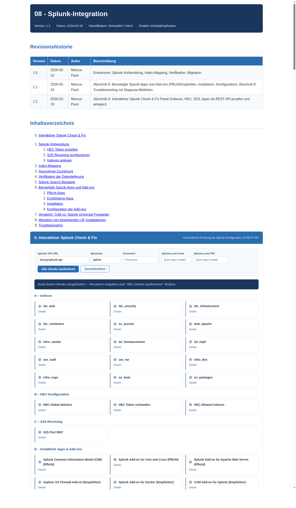
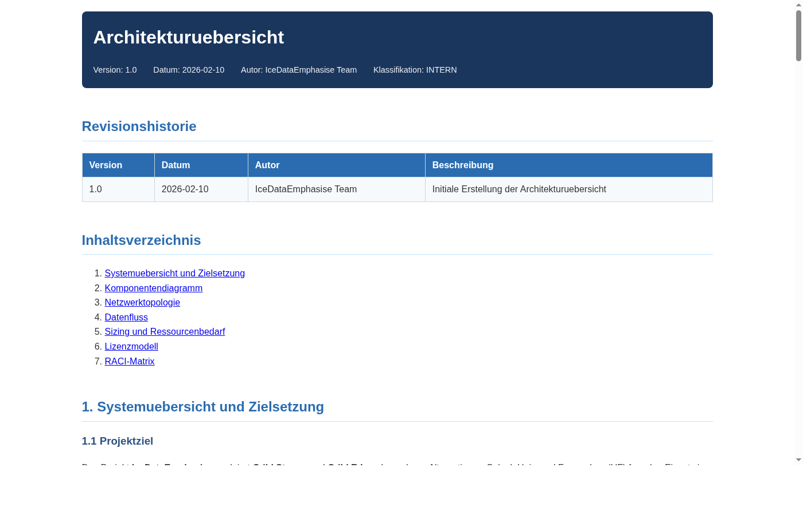
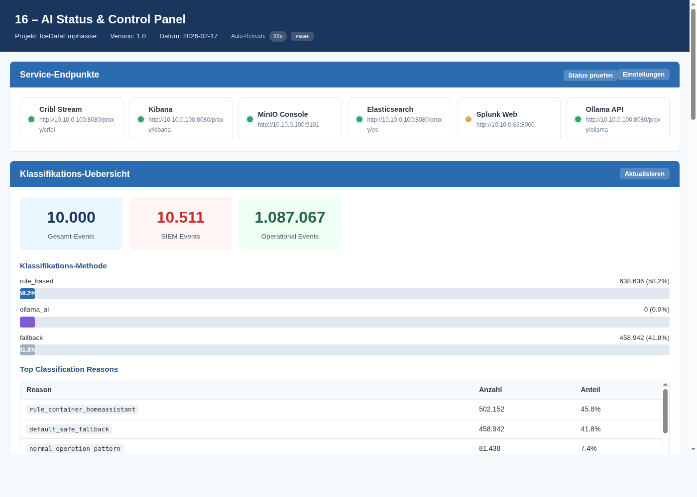
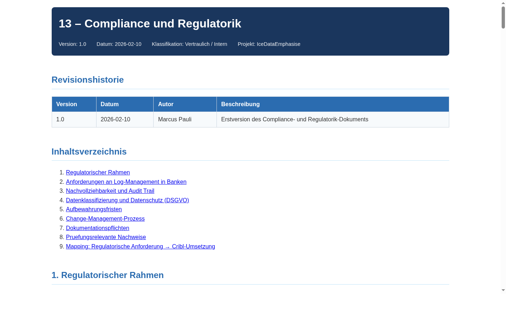

Intelligente Log-Pipeline-Infrastruktur mit lokaler KI-Klassifizierung
Cribl Stream & Edge PoC fuer regulierte Umgebungen (MaRisk / BAIT / DORA)
Version 1.2 | Stand: 2026-02-19 | Klassifikation: INTERN
IceDataEmphasise demonstriert, wie Cribl Stream & Edge zusammen mit einer lokal betriebenen KI (Ollama) die Log-Analyse in regulierten Bankenumgebungen grundlegend verbessern kann – bei gleichzeitiger Reduktion der Splunk-Lizenzkosten um 40–60 %.
Eine dreistufige Verarbeitungskette – Edge-Sammlung, Pipeline-Verarbeitung mit MITRE ATT&CK-Anreicherung und KI-gestuetzte Klassifizierung – entscheidet vor der Indexierung, ob ein Ereignis sicherheitsrelevant (SIEM) oder operativ ist. Nur relevante Daten gehen an den teuren Splunk-Indexer; operationale Telemetrie wird an guenstigere Speicher (S3, Elasticsearch) geroutet.
Systemueberblick, Komponentendiagramm, Netzwerktopologie, Datenfluss, Sizing, Lizenzmodell, RACI-Matrix
Voraussetzungen, Schritt-fuer-Schritt-Anleitung, Tailscale, Cribl Stream & Edge, Post-Install-Pruefungen, Rollback
Worker Processes, Authentication, RBAC, API-Zugang, TLS, Fleet Management
Managed Edge, Fleet-Zuweisung, Edge-Quellen, Windows Deployment, Health Monitoring
12 Log-Quellen im Detail, Berechtigungskonzept, REST API, Input-Metriken, Troubleshooting
HEC vs. S2S, Persistent Queue, Backpressure, Failover-Strategie, Protokollvergleich
5 Pipelines (Syslog, Apache CLF, Docker JSON, Security Auth, Passthrough), Route-Tabelle, MITRE ATT&CK
Interaktiver Check & Fix, Index-Mapping, Sourcetype-Zuordnung, Apps/TAs, SPL-Beispiele, UF-Vergleich, Migration
Taeglich Checkliste, Start/Stop, Log-Rotation, Performance-Monitoring, Backup/Restore, Wartungsfenster
RBAC, TLS/SSL, Firewall, Haertung (CIS), Geheimnis-Management, Audit-Logging, Patch-Management
Severity-Level, DR-Szenarien, Backup/Restore, Wiederanlauf, Kommunikationsplan, Post-Incident Review
KPIs, Prometheus/Grafana, Alerting-Regeln, Dashboard-Empfehlungen, Cron-Monitoring
MaRisk, BAIT, DORA, DSGVO, Aufbewahrungsfristen, Change-Management, Audit-Nachweise
Diagnose-Werkzeuge, haeufige Probleme, Log-Analyse, Diagnostic Bundle, FAQ
10 Uebungen: Lookups, Sampling, MQTT-Routing, PII-Maskierung, Redis-Metriken, Cribl Packs, A/B-Test Regeln vs. Ollama
Live-Dashboard: Service-Status, Klassifikations-Statistiken, Ollama-Analyse, KI-Vorschlaege, Ein-Klick-Regelaktivierung, API-Log
Cribl Edge auf Windows & Ubuntu: Sysmon, auditd, PowerShell-Logging, UFW, fail2ban, MITRE ATT&CK Mapping, OS-Haertung
Schritt-fuer-Schritt: Runtime Fields, Lens-Panels (Metric, XY, Pie, Heatmap, Table), Dashboard-API, Feld-Referenz, Anpassungstipps

Splunk Check & Fix Panel – Interaktive Konfigurationspruefung

Architekturuebersicht – Komponenten und Datenfluss

AI Status & Control Panel – KI-Klassifizierung Dashboard

Compliance – MaRisk / BAIT / DORA Mapping